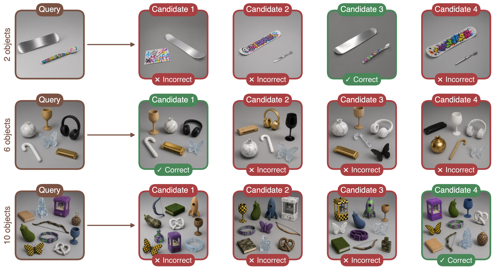
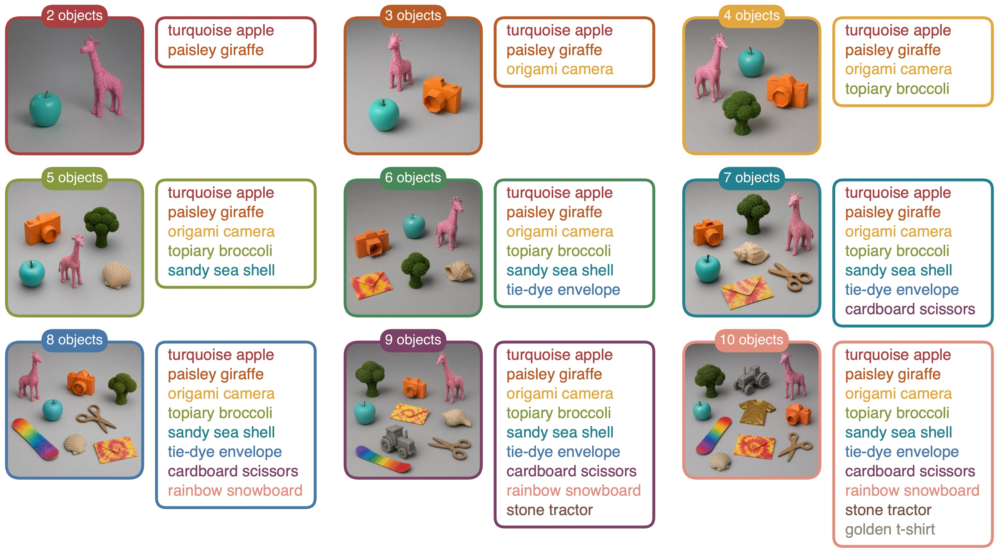
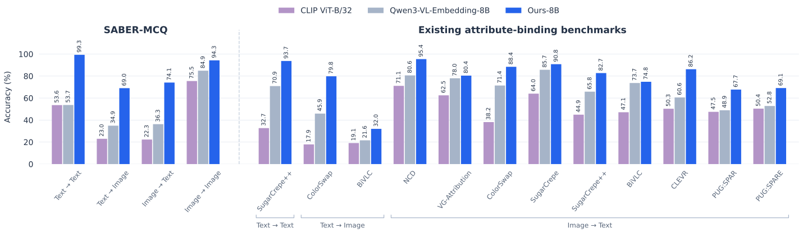
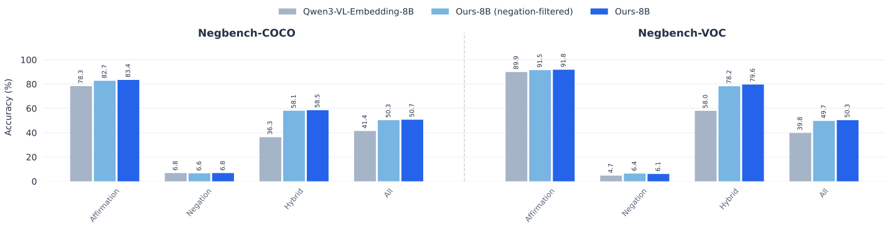
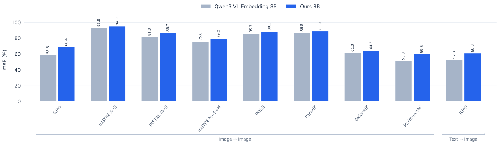

Stuck on Shuffle: On Attribute–Object
Binding in Vision–Language Models
♠︎ OriginAI ♦︎ NVIDIA ♥︎ Tel Aviv University
The paper
Abstract
Retrieval is a fundamental task in multimodal systems: given an image or text query, the goal is to find the most relevant images or texts in a collection, often using a shared embedding space. Reliable retrieval requires these embeddings to capture not only which concepts are present, but also how they are composed. One key compositional challenge is attribute–object binding: encoding which attributes belong to which objects. Existing benchmarks provide a limited view of this capability, typically covering a subset of modality pairings, simple two-object swaps, or small attribute sets. Consequently, it remains unclear how robustly current models preserve attribute–object bindings across different modality pairings and more complex settings.
We therefore introduce SABER, a controlled benchmark for evaluating attribute–object binding across all four image and text modality pairings, spanning diverse attribute types and scenes with up to ten objects. Evaluating models on SABER reveals substantial binding failures in both CLIP-style dual encoders and recent MLLM-based embedders. These findings motivate us to ask how binding can be improved efficiently. While multimodal supervision may be effective, collecting suitable images is difficult and costly. Text, on the other hand, is well suited to binding supervision: it is cheap to generate, supports a broader range of attributes and enables precisely controlled hard negatives. Recent work also shows that capabilities learned through text-only supervision can transfer to visual modalities in MLLMs.
We thus finetune an MLLM-based embedder exclusively on synthetic attribute-binding text. Despite the absence of image supervision, the gains transfer to cross-modal and image–image retrieval while preserving general multimodal embedding performance. Our model achieves SOTA results on SABER while also improving on negation and instance-retrieval benchmarks, demonstrating broader benefits of our binding-focused supervision.
The benchmark
Meet SABER
Synthetic Attribute Binding Evaluation for Representations
4-way multiple choice questions
Identify the binding-preserving match among four candidates. The object and attribute sets are held fixed, but the negative candidates shuffle which attribute belongs to which object.
Large-gallery retrieval
Given a query, retrieve the candidates that preserve all of its attribute–object bindings from a shared gallery of 7,200 candidates. A candidate can contain additional objects and still be a correct match, as long as every query binding is preserved.
Click the figure to flip between views.




The method
Teaching attribute binding through text
No image supervision during finetuning.
damp leaf and grey stone
High above the misty valley, a damp leaf lay half-buried beside a grey stone.
High above the misty valley, a damp stone lay half-buried beside a grey leaf.
Construct controlled triplets
200,000 synthetic text triplets pair short queries with contextualized positives and binding-swapped hard negatives.
Finetune shared parameters
LoRA adapters and a triplet loss adapt Qwen3-VL-Embedding. Shared parameters let textual supervision affect image representations.
Preserve general capabilities
LiNeS rescales layer-wise updates to mitigate forgetting.
Results
Better binding across modality pairings
Text-only finetuning improves accuracy on SABER and all nine existing attribute-binding benchmarks.

Text-only finetuning improves both multiple-choice accuracy and large-gallery retrieval on SABER.
| Model | MCQ Accuracy (%) | Independent retrieval mAP (%) | Nested retrieval mAP (%) |
|---|---|---|---|
| CLIP ViT-B/32 | 43.6 | 57.8 | 29.3 |
| Qwen3-VL-Embedding-8B | 52.5 | 71.9 | 38.3 |
| Ours-8B | 84.2 | 91.1 | 54.1 |
From attribute binding to negation
Negation
The benefits of binding supervision extend to negation understanding.

Beyond attribute binding
Instance retrieval
Instance retrieval is the task of finding other images of the same specific object, not just the same category.

One possible explanation for these gains is that improved attribute binding helps distinguish visually similar objects within the same fine-grained category, such as black shirts with different prints. To test this, we restrict retrieval to a single fine-grained ILIAS category at a time—for example, searching for a card only among cards, or a mural only among murals. The finetuned model improves across all 38 categories, with a mean gain of 8.5 mAP points.
1 / 3 · Cards
BibTeX
@article{tamir2026stuck,
title={Stuck on Shuffle: On Attribute-Object Binding in Vision-Language Models},
author={Tamir, Netanel Y. and Green, Michael and Tzachor, Issar and Shimshi, Or and Samuel, Dvir and Patashnik, Or and Ben-Ari, Rami},
journal={arXiv preprint arXiv:2610.22602},
year={2026}
}